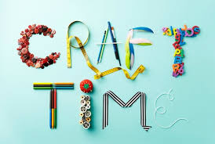

Nature Selection
This section has many different books for the nature enthusiest!
- New Arrivals
- Staff Pics
- Events
Find more info on Indigeous land Teachings Here:
Honouring the Teachings of These LandsCooking Selection
 Cooking section
Cooking section
Find all your information to be the best cook ever!
- New Arrivals
- Staff Pics
- Events
Find more resources here:
Elder Approved Bannock RecipeCraft Selection

Come research and learn a new hobbie or craft!
- New Arrivals
- Staff Pics
- Events
Get your Crafting Supplies Here:
Crafting Supplies